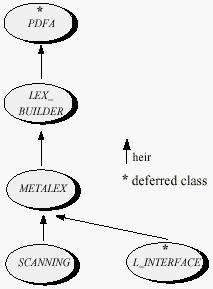

When analyzing a text by computer, it is usually necessary to split it into individual components or tokens. In human languages, the tokens are the words; in programming languages, tokens are the basic constituents of software texts, such as identifiers, constants and special symbols.
The process of recognizing the successive tokens of a text is called lexical analysis. This chapter describes the Lex library, a set of classes which make it possible to build and apply lexical analyzers to many different languages.
Besides recognizing the tokens, it is usually necessary to recognize the deeper syntactic structure of the text. This process is called parsing or syntax analysis and is studied in the next chapter.
Figure 1 shows the inheritance structure of the classes discussed in this chapter. Class L_INTERFACE has also been included although we will only study it in the next chapter; it belongs to the Parse library, where it takes care of the interface between parsing and lexical analysis.
Figure 1: Lexical classes
To use the Lex library it is necessary to understand the basic concepts and terminology of lexical analysis.
The set of tokens accepted by a lexical analyzer is called a lexical grammar. For example, the basic constructs of Eiffel (identifiers, keywords, constants, special symbols) constitute a lexical grammar. For reasons that will be clear below, a lexical grammar is also known as a regular grammar.
A lexical grammar defines a number of token types, such as Identifier and Integer for Eiffel. A token that conforms to the structure defined for a certain token type is called a specimen of that token type. For example, the token my_identifier, which satisfies the rules for Eiffel tokens, is a specimen of the token type Identifier; 201 is a specimen of the token type Integer.
To define a lexical grammar is to specify a number of token types by describing precisely, for each token type, the form of the corresponding specimens. For example a lexical grammar for Eiffel will specify that Identifier is the token type whose specimens are sequences of one or more characters, of which the first must be a letter (lower-case or upper-case) and any subsequent one is a letter, a digit (0 to 9) or an underscore. Actual grammar descriptions use a less verbose and more formal approach, studied below: regular expressions.
A lexical analyzer is an object equipped with operations that enable it to read a text according to a known lexical grammar and to identify the text’s successive tokens.
The classes of the Lex library make it possible to define lexical grammars for many different applications, and to produce lexical analyzers for these grammars.
For the user of the Lex libraries, the classes of most direct interest are TOKEN, LEXICAL, METALEX and SCANNING.
An instance of TOKEN describes a token read from an input file being analyzed, with such properties as the token type, the corresponding string and the position in the text (line, column) where it was found.
An instance of LEXICAL is a lexical analyzer for a certain lexical grammar. Given a reference to such an instance, say analyzer, you may analyze an input text through calls to the features of class LEXICAL, for example:
analyzer.get_token
Class METALEX defines facilities for building such lexical analyzers. In particular, it provides features for reading the grammar from a file and building the corresponding analyzer. Classes that need to build and use lexical analyzers may be written as descendants of METALEX to benefit from its general-purpose facilities.
Class SCANNING is one such descendant of METALEX. It contains all the facilities needed to build an ordinary lexical analyzer and apply it to the analysis of input texts. Because these facilities are simpler to use and are in most cases sufficient, SCANNING will be discussed first; the finer-grain facilities of METALEX are described towards the end of this chapter.
These classes internally rely on others, some of which may be useful for more advanced applications. LEX_BUILDER, one of the supporting classes, will be introduced after METALEX.
The ISE Eiffel 3 delivery includes (in the examples/library/lex subdirectory) a simple example using the Lexical Library classes. The example applies Lex library facilities to the analysis of a language which is none other than Eiffel itself.
The root class of that example, EIFFEL_SCAN, is only a few lines long; it relies on the general mechanism provided by SCANNING (see below). The actual lexical grammar is given by a lexical grammar file (a concept explained below): the file of name eiffel_regular in the same directory.
Lexical analysis relies on the theory of finite automata. The most advanced of the classes discussed in this chapter, LEX_BUILDER, relies on classes describing various forms of automata:
These classes may also be useful for systems that need to manipulate finite automata for applications other than lexical analysis. The interface of LEX_BUILDER, which includes the features from AUTOMATON, NDFA and PDFA, will provide the essential information.
A lexical analyzer built through any of the techniques described in the rest of this chapter will return tokens - instances of class TOKEN. Here are the most important features of this class:
The general method for performing lexical analysis is the following.
Steps 2 and 3 are obviously unnecessary if this process is applied as a single sequence. But in almost all practical cases you will want to use the same grammar to analyze many different input texts. Then steps 1 and 2 will be performed once and for all as soon as the lexical grammar is known, yielding an instance of LEXICAL that step 2 stores into a file; then in every case that requires analyzing a text you will simply retrieve the analyzer and apply it, performing steps 3 and 4 only.
The simplest way to store and retrieve the instance of LEXICAL and all related objects is to use the facilities of class STORABLE: procedure store and one of the retrieval procedures. To facilitate this process, LEXICAL inherits from STORABLE.
The next sections explain how to perform these various steps. In the most common case, the best technique is to inherit from class SCANNING, which provides a framework for retrieving an analyzer file if it exists, creating it from a grammar description otherwise, and proceed with the lexical analysis of one or more input texts.
Class SCANNING may be used as an ancestor by classes that need to perform lexical analysis. When using SCANNING you will need a lexical grammar file that contains the description of the lexical grammar. Since it is easy to edit and adapt a file without modifying the software proper, this technique provides flexibility and supports the incremental development and testing of lexical analyzers.
To obtain a lexical analyzer in a descendant of class SCANNING, use the procedure
build (store_file_name, grammar_file_name: STRING)
If no file of name store_file_name exists, then build reads the lexical grammar from the file of name grammar_file_name, builds the corresponding lexical analyzer, and stores it into store_file_name.
If there already exists a file of name grammar_file_name, build uses it to recreate an analyzer without using the grammar_file_name.
A lexical grammar file (to be used as second argument to build, corresponding to grammar_file_name) should conform to a simple structure, of which the file eiffel_regular in the examples directory provides a good illustration.
Here is the general form:
Token_type_1 Regular_expression_1
Token_type_2 Regular_expression_2
...
Token_type_m Regular_expression_m
-- Keywords
Keyword_1
Keyword_2
...
Keyword_n
In other words: one or more lines, each containing the name of a token type and a regular expression; a line beginning with two dashes -- (the word Keywords may follow them to signal that this is the beginning of keywords); and one or more lines containing one keyword each.
Each Token_type_i is the name of a token type, such as Identifier or Decimal_constant. Each Regular_expression_i is a regular expression, built according to a precisely specified format. That format is defined later in this chapter, but even without having seen that definition it is not hard to understand the following small and typical example of lexical grammar file without keywords:
Decimal '0'..'9'
Natural +('0'..'9')
Integer ['+'|'-'] '1'..'9' *('0'..'9')
The first expression describes a token type whose specimens are tokens made of a single-letter decimal digit (any character between 0 and 9). In the second, the + sign denotes repetition (one or more); the specimens of the corresponding token type are all non-empty sequences of decimal digits - in other words, natural numbers, with leading zeroes permitted. In the third, the | symbol denotes alternation, and the asterisk denotes repetition (zero or more); the corresponding tokens are possibly signed integer constants, with no leading zeroes.
As explained below, keywords are regular expressions which are treated separately for convenience and efficiency. If you are using lexical grammar files of the above form, all keywords must be specimens of the last regular expression given (Regular_expression_m above). More details below.
Once build has given you an analyzer, you may use it to analyze input texts through calls to the procedure
analyze (input_file_name: STRING)
This will read in and process successive input tokens. Procedure analyze will apply to each of these tokens the action of procedure do_a_token. As defined in SCANNING, this procedure prints out information on the token: its string value, its type, whether it is a keyword and if so its code. You may redefine it in any descendant class so as to perform specific actions on each token.
The initial action begin_analysis, which by default prints a header, and the terminal action end_analysis, which by default does nothing, may also be redefined.
To build lexical analyzers which provide a higher degree of flexibility, use METALEX or LEX_BUILDER, as described in the last part of this chapter.
Let us look more precisely at how we can use a lexical analyzer to analyze an input text.
Procedure analyze takes care of the most common needs of lexical analysis. But if you need more advanced lexical analysis facilities you will need an instance of class LEXICAL (a direct instance of LEXICAL itself or of one of its proper descendants). If you are using class SCANNING as described above, you will have access to such an instance through the attribute analyzer.
This discussion will indeed assume that you have an entity attached to an instance of LEXICAL. The name of that entity is assumed to be analyzer, although it does not need to be the attribute from SCANNING. You can apply to that analyzer the various exported features features of class LEXICAL, explained below. All the calls described below should use analyzer as their target, as in
analyzer.set_file ("my_file_name")
To create a new analyzer, use
create analyzer.make_new
You may also retrieve an analyzer from a previous session. LEXICAL is a descendant from STORABLE, so you can use feature retrieved for that purpose. In a descendant of STORABLE, simply write
analyzer ?= retreived
If you do not want to make the class a descendant of STORABLE, use the creation procedure make of LEXICAL, not to be confused with make_new above:
create analyzer.make
analyzer ?= analyzer.retreived
To analyze a text, call set_file or set_string to specify the document to be parsed. With the first call, the analysis will be applied to a file; with the second, to a string.
Note: if you use procedure analyze of SCANNING, you do not need any such call, since analyze calls set_file on the file name passed as argument.
The basic procedure for analyzing successive tokens in the text is get_token, which reads in one token and sets up various attributes of the analyzer to record properties of that token:
Procedure get_token recognizes the longest possible token. So if <, = and <= are all regular expressions in the grammar, the analyzer recognizes <= as one token, rather than < followed by =. You can use other_possible_tokens to know what shorter tokens were recognized but not retained.
If it fails to recognize a regular expression, get_token sets token_type to No_token and advances the input cursor by one character.
Here is the most common way of using the preceding facilities:
from
set_file ("text_directory/text_to_be_parsed")
-- Or: set_string ("string to parse")
begin_analysis
until
end_of_text
loop
analyzer.get_token
if analyzer.token_type = No_token then
go_on
end
do_a_token (lexical.last_token)
end
end_analysisThis scheme is used by procedure analyze of class SCANNING, so that in standard cases you may simply inherit from that class and redefine procedures begin_analysis, do_a_token and end_analysis. If you are not inheriting from SCANNING, these names simply denote procedures that you must provide.
The Lex library supports a powerful set of construction mechanisms for describing the various types of tokens present in common languages such as programming languages, specification languages or just text formats. These mechanisms are called regular expressions; any regular expression describes a set of possible tokens, called the specimens of the regular expression.
Let us now study the format of regular expressions. This format is used in particular for the lexical grammar files needed by class SCANNING and (as seen below) by procedure read_grammar of class METALEX.Theeiffel_regular grammar file in the examples directory provides an extensive example.
Each regular expression denotes a set of tokens. For example, the first regular expression seen above,
'0'..'9'
denotes a set of ten tokens, each consisting of a single digit.
A character expression, written 'character' where character is a single character, describes a set of tokens with just one element: the one-character token character.For example, '0' describes the set containing the single-digit single token 0.
Cases in which character is not a printable character use the following conventions:
| '\ooo' | Character given by its three-digit octal code ooo. |
| '\xx' | Character given by its two-digit hexadecimal code xx. (Both lower- and upper-case may be used for letters in xx.) |
| '\r' | Carriage return |
| '\'' | Single quote |
| '\\' | Backslash |
| '\t' | Tabulation |
| '\n' | New line |
| '\b' | Backspace |
| '\f' | Form feed |
An interval, written lower..upper where lower and upper are character expressions, describes a set of one-character tokens: all the characters whose ASCII code is between the codes for the characters in lower and upper. For example, '0'..'9' contains all tokens made of a single decimal digit.
A parenthesized expression, written (exp) where exp is a regular expression, describes the same set of tokens as exp. This serves to remove ambiguities in complex regular expressions. For example, the parenthesized expression ('0'..'9') also describes all single-decimal-digit tokens.
A difference, written interval - char, where interval is an interval expression and char is a character expression, describes the set of tokens which are in exp but not in char. For example, the difference '0'..'9' - '4' describes all single-decimal-digit tokens except those made of the digit 4.
Caution: a difference may only apply to an interval and a single character.
An unbounded iteration, written *exp or +exp where exp is a regular expression, describes the set of tokens made of sequences of zero or more specimens of exp (in the first form, using the asterisk), or of one or more specimens of exp (in the second form, using the plus sign). For example, the iteration +('0'..'9') describes the set of tokens made of one or more consecutive decimal digits.
A fixed iteration, written n exp where n is a natural integer constant and exp is a regular expression, describes the set of tokens made of sequences of exactly n specimens of exp. For example, 3 ('A'..'Z') describes the set of all three-letter upper-case tokens.
A concatenation, written exp1 exp2 ... expn, describes the set of tokens made of a specimen of exp1 followed by a specimen of exp2 etc. For example, the concatenation '1'..'9' * ('0'..'9') describes the set of tokens made of one or more decimal digits, not beginning with a zero - in other words, integer constants in the usual notation.
An optional component, written [exp] where exp is a regular expression, describes the set of tokens that includes the empty token and all specimens of exp. Optional components usually appear in concatenations.
Concatenations may be inconvenient when the concatenated elements are simply characters, as in 'A' ' ' 'T' 'e' 'x' 't'. In this case you may use a string in double quotes, as in
"A Text"
More generally, a string is written "a1 a2 ... an" for n >= 0, where the ai are characters, and is an abbreviation for the concatenation 'a1' 'a2' ... 'an', representing a set containing a single token. In a string, the double quote character " is written \" and the backslash character \ is written \\. No other special characters are permitted; if you need special characters, use explicit concatenation. As a special case, "" represents the set containing a single empty token.
A union, written exp1 | exp2 | ... | expn, describes the set of tokens which are specimens of exp1, or of exp2 etc. For example, the union ('a'..'z') | ('A'..'Z') describes the set of single-letter tokens (lower-case or upper-case).
A joker, written $•, describes the set of all tokens made of exactly one character. A joker is considered to be an interval expression, so that it may be the first operand of a difference operation.
A printable, written $P, describes the set of all tokens made of exactly one printable character.
A blank, written $B, describes the set of all tokens made of one or more specimens of the characters blank, new-line, carriage-return and tabulation.
The following non-elementary forms are abbreviations for commonly needed regular expressions:
| Code | Equivalent expression | Role |
| $L | '\n' | New-line character |
| $N | +('0'..'9') | Natural integer constants |
| $R | ['+'|'-'] +('0'..'9') '.' *('0'..'9') ['e'|'E' ['+'|'-'] +('0'..'9')] | Floating point constants |
| $W | +($P - ' ' - '\t' - '\n' - '\r') | Words |
| $Z | ['+'|'-'] +('0'..'9') | Possibly signed integer constants |
A delimited string, written ->string, where string is of the form, "a1 a2 ... an", represents the set of tokens made of any number of printable characters and terminated by string.
One more form of regular expression, case-sensitive expressions, using the ~ symbol, will be introduced below.You may freely combine the various construction mechanisms to describe complex regular expressions. Below are a few examples.
| 'a'..'z' - 'c' - 'e' | Single-lower-case-letter tokens, except c and e. |
| $• - '\007' | Any single-character token except ASCII 007. | +('a'..'z') | One or more lower-case letters. |
| ['+'|'-'] '1'..'9' *('0'..'9') | Integer constants, optional sign, no leading zero. |
| ->"*/" | Any string up to and including an occurrence of */ (the closing symbol of a PL/I or C comment). |
| "\"" ->"\"" | Eiffel strings. |
Many languages to be analyzed have keywords - or, more generally, "reserved words". Eiffel, for example, has reserved words such as class and Result.
Note: in Eiffel terminology reserved words include keywords; a keyword is a marker playing a purely syntactical role, such as class. Predefined entities and expressions such as Result and Current, which have an associated value, are considered reserved words but not keywords. The present discussion uses the term "keyword" although it can be applied to all reserved words.
In principle, keywords could be handled just as other token types. In Eiffel, for example, one might treat each reserved words as a token type with only one specimen; these token types would have names such as Class or Then and would be defined in the lexical grammar file:
Class 'c' 'l' 'a' 's' 's'
Then 't' 'h' 'e' 'n'
...
This would be inconvenient. To simplify the task of language description, and also to improve the efficiency of the lexical analysis process, it is usually preferable to treat keywords as a separate category.
If you are using class SCANNING and hence a lexical grammar file, the list of keywords, if any, must appear at the end of the file, one per line, preceded by a line that simply reads
-- Keywords
For example the final part of the example Eiffel lexical grammar file appears as:
... Other token type definitions ...
Identifier ~('a'..'z') *(~('a'..'z') | '_' | ('0'..'9'))
-- Keywords
alias
all
and
as
BIT
BOOLEAN
... Other reserved words ...
Caution: every keyword in the keyword section must be a specimen of one of the token types defined for the grammar, and that token type must be the last one defined in the lexical grammar file, just before the Keywords line. So in Eiffel where the keywords have the same lexical structure as identifiers, the last line before the keywords must be the definition of the token type Identifier, as shown above.
Note: the rule that all keywords must be specimens of one token type is a matter of convenience and simplicity, and only applies if you are using SCANNING and lexical grammar files. There is no such restriction if you rely directly on the more general facilities provided by METALEX or LEX_BUILDER. Then different keywords may be specimens of different regular expressions; you will have to specify the token type of every keyword, as explained later in this chapter.
By default, letter case is not significant for regular expressions and keywords. So if yes matches a token type defined by a regular expression, or is a keyword, the input values Yes, yEs and yES will all yield the same token or keyword. This also means that 'a'..'z' and 'a'..'z' | 'A'..'Z' describe the same set of tokens.
The regular expression syntax introduced above offers a special notation to specify that a particular expression is case-sensitive: ~exp, where exp is a regular expression. For example, ~('A'..'Z') only covers single-upper-case-letter tokens. But for all other kinds of expression letter case is not taken into account.
You may change this default behavior through a set of procedures introduced in class LEX_BUILDER and hence available in its descendants METALEX and SCANNING.
To make subsequent regular expressions case-sensitive, call the procedure
ignore_case
To revert to the default mode where case is not significant, call the procedure
distinguish_case
Each of these procedures remains in effect until the other one is called, so that you only need one call to define the desired behavior.
For keywords, the policy is less tolerant. A single rule is applied to the entire grammar: keywords are either all case-sensitive or all case-insensitive. To make all keywords case-sensitive, call
keywords_distinguish_case
The inverse call, corresponding to the default rule, is
keywords_distinguish_case
Either of these calls must be executed before you define any keywords; if you are using SCANNING, this means before calling procedure build. Once set, the keyword case-sensitivity policy cannot be changed.
(You may skip the rest of this chapter if you only need simple lexical facilities.)
Class SCANNING, as studied above, relies on a class METALEX. In some cases, you may prefer to use the features of METALEX directly. Since SCANNING inherits from METALEX, anything you do with METALEX can in fact be done with SCANNING, but you may wish to stay with just METALEX if you do not need the additional features of SCANNING.
METALEX has an attribute analyzer which will be attached to a lexical analyzer. This class provides tools for building a lexical analyzer incrementally through explicit feature calls; you can still use a lexical grammar file, but do not have to.
The following extract from a typical descendant of METALEX illustrates the process of building a lexical analyzer in this way:
Upper_identifier, Lower_identifier, Decimal_constant, Octal_constant, Word: INTEGER is unique
...
distinguish_case
keywords_distinguish_case
put_expression ("+('0'..'7'"), Octal_constant, "Octal")
put_expression ("'a'..'z' *('a'..'z'|'0'..'9'|'_')", Lower_identifier, "Lower")
put_expression ("'A'..'Z' *('A'..'Z'|'0'..'9'|'_' )", Upper_identifier, "Upper")
dollar_w (Word)
...
put_keyword ("begin", Lower_identifier)
put_keyword ("end", Lower_identifier)
put_keyword ("THROUGH", Upper_identifier)
...
make_analyzer
This example follows the general scheme of building a lexical analyzer with the features of METALEX, in a class that will normally be a descendant of METALEX:
To perform steps 2 to 4 in a single shot and generate a lexical analyzer from a lexical grammar file, as with SCANNING, you may use the procedure
read_grammar (grammar_file_name: STRING)
In this case all the expressions and keywords are taken from the file of name grammar_file_name rather than passed explicitly as arguments to the procedures of the class. You do not need to call make_analyzer, since read_grammar includes such a call.
The rest of this discussion assumes that the four steps are executed individually as shown above, rather than as a whole using read_grammar.
As shown by the example, each token type, defined by a regular expression, must be assigned an integer code. Here the developer has chosen to use Unique constant values so as not to worry about selecting values for these codes manually, but you may select any values that are convenient or mnemonic. The values have no effect other than enabling you to keep track of the various lexical categories. Rather than using literal values directly, it is preferable to rely on symbolic constants, Unique or not, which will be more mnemonic.
Procedure put_expression records a regular expression. The first argument is the expression itself, given as a string built according to the rules seen earlier in this chapter. The second argument is the integer code for the expression. The third argument is a string which gives a name identifying the expression. This is useful mostly for debugging purposes; there is also a procedure put_nameless_expression which does not have this argument and is otherwise identical to put_expression.
Procedure dollar_w corresponds to the $W syntax for regular expressions. Here an equivalent call would have been
put_nameless_expression ("$W", Word)
Procedure declare_keyword records a keyword. The first argument is a string containing the keyword; the second argument is the regular expression of which the keyword must be a specimen. The example shows that here - in contrast with the rule enforced by SCANNING - not all keywords need be specimens of the same regular expression.
The calls seen so far record a number of regular expressions and keywords, but do not give us a lexical analyzer yet. To obtain a usable lexical analyzer, you must call
make_analyzer
After that call, you may not record any new regular expression or keyword. The analyzer is usable through attribute analyzer.
Note: for readers knowledgeable in the theory of lexical analysis: one of the most important effects of the call to make_analyzer is to transform the non-deterministic finite automaton resulting from calls such as the ones above into a deterministic finite automaton.
Remember that if you use procedure read_grammar, you need not worry about make_analyzer, as the former procedure calls the latter.
Another important feature of class METALEX is procedure store_analyzer, which stores the analyzer into a file whose name is passed as argument, for use by later lexical analysis sessions. To retrieve the analyzer, simply use procedure retrieve_analyzer, again with a file name as argument.
To have access to the most general set of lexical analysis mechanisms, you may use class LEX_BUILDER, which gives you an even finer grain of control than METALEX. This is not necessary in simple applications.
LEX_BUILDER enables you to build a lexical analyzer by describing successive token types and keywords. This is normally done in a descendant of LEX_BUILDER. For each token type, you call a procedure that builds an object, or tool, representing the associated regular expression.
For the complete list of available procedures, refer to the flat-short form of the class; there is one procedure for every category of regular expression studied earlier in this chapter. Two typical examples of calls are:
interval ('a', 'z')
-- Create an interval tool
union (Letter, Underlined)
-- Create a union tool
Every such procedure call also assigns an integer index to the tool it creates; this number is available through the attribute last_created_tool. You will need to record it into an integer entity, for example Identifier or Letter.
The following extract from a typical descendant of LEX_BUILDER illustrates how to create a tool representing the identifiers of an Eiffel-like language.
Identifier, Letter, Digit, Underlined, Suffix, Suffix_list: INTEGER
build_identifier is
do
interval ('a', 'z'); Letter := last_created_tool
interval ('0', '9'); Digit := last_created_tool
interval ('_', '_'); Underlined := last_created_tool
union (Digit, Underlined); Suffix := last_created_tool
iteration (Suffix); Suffix_list := last_created_tool
append (Letter, Suffix_list); Identifier := last_created_tool
endEach token type is characterized by a number in the tool_list. Each tool has a name, recorded in tool_names, which gives a readable form of the corresponding regular expression. You can use it to check that you are building the right tool.
In the preceding example, only some of the tools, such as Identifier, are of interest to the clients. Others, such as Suffix and Suffix_list, only play an auxiliary role.
When you create a tool, it is by default invisible to clients. To make it visible, use procedure select_tool. Clients will need a number identifying it; to set this number, use procedure associate. For example the above extract may be followed by:
select_tool (Identifier)
associate (Identifier, 34)
put_keyword ("class", Identifier)
put_keyword ("end", Identifier)
put_keyword ("feature", Identifier)
If the analysis encounters a token that belongs to two or more different selected regular expressions, the one entered last takes over. Others are recorded in the array other_possible_tokens.
If you do not explicitly give an integer value to a regular expression, its default value is its rank in tool_list.